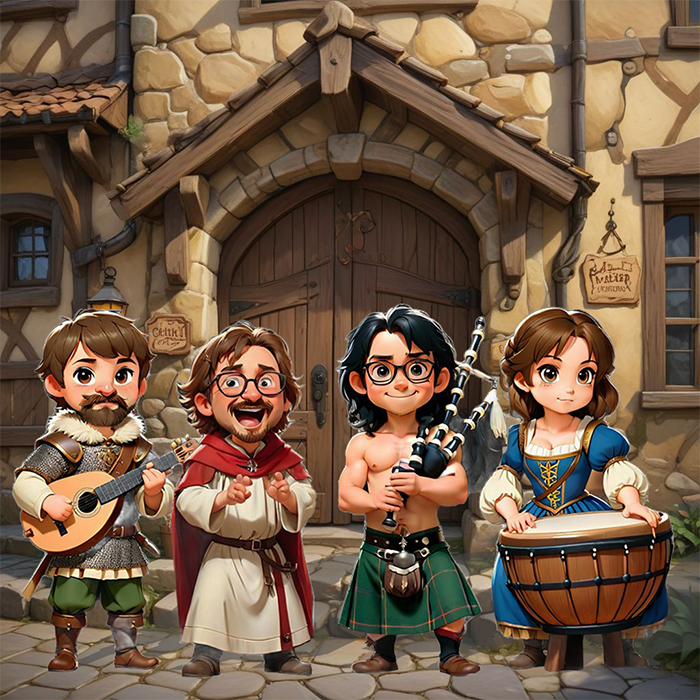

Wir sind eine mittelalterliche Folk-Rock-Band* mit Sitz in Lübeck. Unsere Leidenschaft für Met, vom Trinken bis zum Herstellen, wollen wir nun auch auf Musik erweitern. Unser erstes Album, "Goldene Liebe", ist ein Zeugnis unserer Hingabe an das Handwerk der Honig-Kelterei. Wir verstehen uns als *virtuelle Band und freuen uns die Welt mit Met zu erheitern.
 Kelterer des Wahren Mets
Kelterer des Wahren Mets
So klingt der Wahre Met: Mittelalter Folk-Rock mit Honiggeschmack
Hör' doch mal rein:

Arnulf und der Gesang der Asen
Es war ein frostiger Morgen, als Arnulf aus seinem schmalen Bett stieg. Das Holzfeuer in der Ecke seines Zimmers war lange erloschen, und der Atem hing ihm in dünnen Wolken vor dem Gesicht. Er strich sich den grauen Bart glatt und legte sich seine wärmende Wolfsfellrobe über die Schultern. Obwohl der Wind draußen an den Ritzen seiner Hütte zerrte, fühlte Arnulf die Kälte kaum. Er war seit Jahren der Priester Odins, und die magischen Gaben der Asen hatten seinen Geist und Körper abgehärtet.
Sein Heim lag am Rande eines dichten Waldes, an einem Ort, der den Menschen unheimlich vorkam. Geschichten über ihn, den alten Priester, waren weit verbreitet. Man sprach von seinen Heilkräften, von den Flüchen, die er brechen konnte, und davon, dass er in den stürmischen Nächten das Flüstern der Götter hörte. Arnulf jedoch sah sich selbst nur als Diener. Ein Mann, der die alten Riten kannte und die Verbindung zwischen dem Sterblichen und dem Ewigen bewahrte.
An diesem Morgen spürte Arnulf, dass der Tag anders sein würde. Es war, als zöge etwas Uraltes, Schweres durch die Luft – eine Macht, die nicht lange unbemerkt bleiben konnte. Er nahm seinen Stab, an dem Runen aus uraltem Holz eingeschnitzt waren, und trat hinaus in die kalte Morgenluft. Nebel umwogte den Boden, während sich die Sonne mühsam über den Horizont kämpfte.
"Priester Arnulf!" Eine tiefe Stimme durchbrach die Stille.
Arnulf drehte sich um und sah einen breitschultrigen Krieger auf ihn zukommen. Sein Helm war schief aufgesetzt, und seine Augen waren von tiefen Sorgenfalten durchzogen. Es war Halvar, der unbezwingbare Krieger, doch heute wirkte er gebrochen. Er stützte sich schwer auf sein Schwert, das noch mit Schlamm und Blut aus der letzten Schlacht besudelt war.
"Was führt dich zu mir, Halvar?" fragte Arnulf mit einer ruhigen Stimme, die zugleich beruhigend und mächtig klang. Der Krieger war in seinem Dorf für seine Unerschrockenheit bekannt, doch jetzt zitterte seine Hand, als er sprach.
"Es ist Siegrid," sagte Halvar schwer atmend, "Sie ist verletzt. Sterbend, wenn du nichts tust." Seine Augen flackerten, und Arnulf konnte den Schmerz in ihnen sehen.
"Bring sie zu mir," antwortete Arnulf und nickte leicht, als wüsste er schon, was zu tun war.
Binnen Minuten trugen zwei andere Krieger eine junge Frau auf einer improvisierten Bahre herbei. Siegrid die Mutige, bekannt für ihren Kampf gegen Eisriesen und Barbaren. Doch nun lag sie leblos da, ihre Augen geschlossen, ihre Haut blass wie Schnee. Arnulf ließ sich zu ihr nieder und legte seine Hand sanft auf ihre Stirn. Die Kälte des Todes kroch bereits durch ihre Adern.
"Was ist geschehen?" fragte Arnulf leise, während er ihre Wunden musterte. Die anderen Krieger standen stumm da, als wüssten sie, dass Worte nichts mehr ändern könnten.
"Der Fluch," flüsterte Halvar schließlich, "Der Fluch der Eisriesen. Sie haben sie mit einem dunklen Zauber belegt. Kein Schwert konnte sie retten, keine Medizin."
Arnulf schloss die Augen. Er spürte den Schatten, der auf Siegrids Seele lastete, doch es war nicht der Tod, der sie bedrohte. Es war etwas Tieferes, etwas, das aus einer anderen Welt stammte. Die Flut der Asen in ihm wallte auf, und er hörte das ferne Flüstern, das durch die Wipfel der Bäume und den Wind wehte.
"Der Gesang der Asen," murmelte Arnulf und stand auf. Er wandte sich zum Wald, während die Krieger in atemloser Erwartung zurückblieben.
Arnulf trat an die Baumgrenze und hob seinen Stab. Er begann zu murmeln, die uralten Worte der Götter, die Sprache der Asen, die nur wenige je gehört hatten. Der Wind schien auf sein Kommando zu hören, drehte sich und trug seine Stimme weit in den Himmel. Der Nebel um ihn herum wirbelte auf, als ob unsichtbare Hände ihn formten. Die Luft knisterte von Magie.
Plötzlich kam Bewegung in die Wolken über ihnen, und Arnulf öffnete die Augen. Ein Lichtstrahl durchbrach den Himmel, gleißend und warm. Es traf Siegrid, die auf ihrer Bahre lag. Ein tiefes, fernes Brummen, fast wie Gesang, erfüllte die Luft.
Arnulf wusste, was er zu tun hatte. Er drehte sich zu Halvar um. "Bringt mir das Horn mit Mēt," sagte er ernst. "Der reine Honigwein wird ihr helfen, aber der Segen der Asen ist, was sie wirklich braucht."
Eilig reichte Halvar ihm das Horn, und Arnulf tauchte es in den Lichtstrahl. Die goldene Flüssigkeit schimmerte, als sie durch den Segen der Götter erleuchtet wurde. Er kniete sich wieder zu Siegrid, hob sanft ihren Kopf und flößte ihr den Mēt ein. Sie zitterte, ihr Körper spannte sich an, als das Licht in sie strömte. Plötzlich öffnete sie die Augen, keuchte nach Luft und griff nach Arnulfs Hand.
"Du bist gerettet," flüsterte er. "Die Asen haben dir ihre Gunst gewährt."
Die Krieger um sie herum starrten ehrfürchtig auf die Szene. Siegrid, die Mutige, saß aufrecht, lebendig, als wäre der Schatten des Todes niemals über sie gekommen.
Arnulf lächelte leicht. "Die Asen beschützen jene, die mutig sind," sagte er und richtete sich auf. "Doch merke dir, Siegrid, der größte Kampf wird immer in deinem eigenen Herzen ausgetragen."
Mit diesen Worten drehte er sich um und verschwand langsam im Nebel des Waldes. Die Krieger standen still, während Siegrid ihn mit einem neuen Glanz in den Augen ansah. Sie hatte den Tod gesehen, aber auch die Götter, und sie wusste, dass sie niemals alleine kämpfen würde.